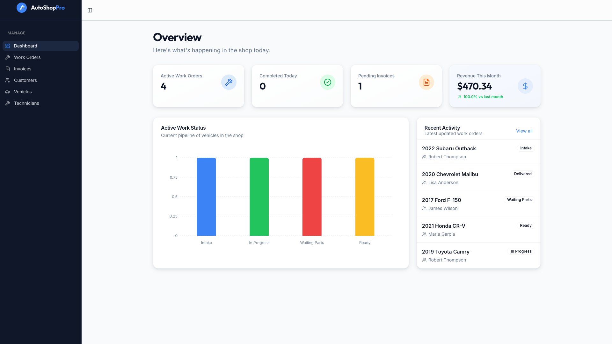
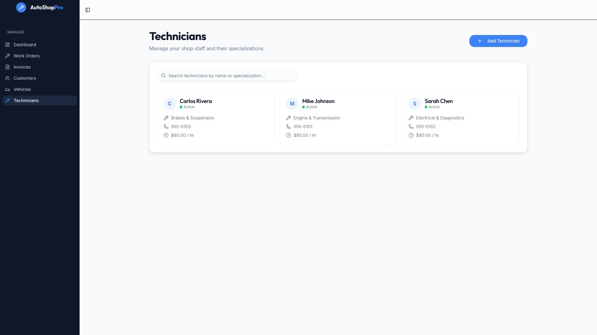
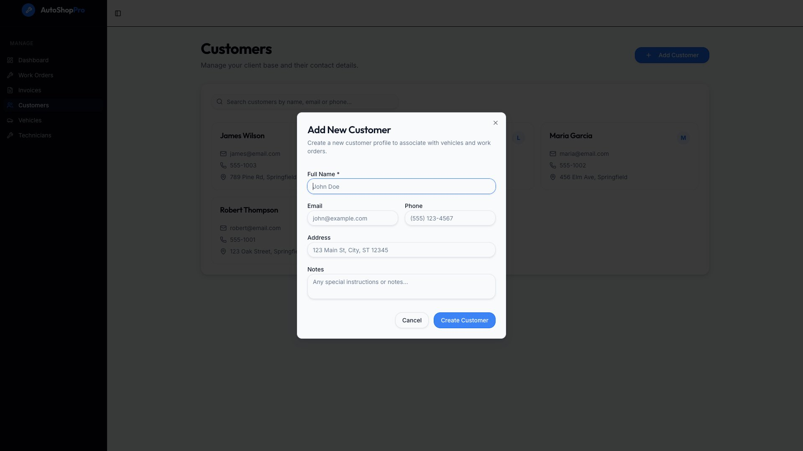
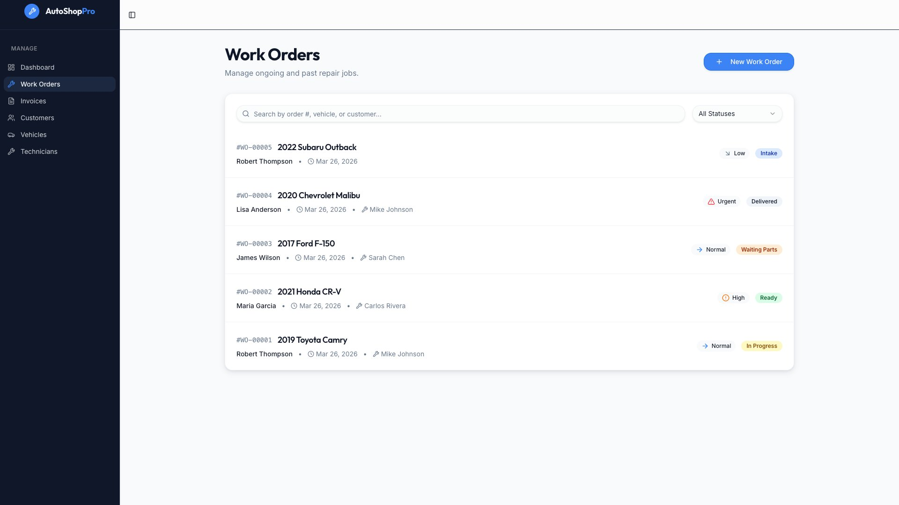
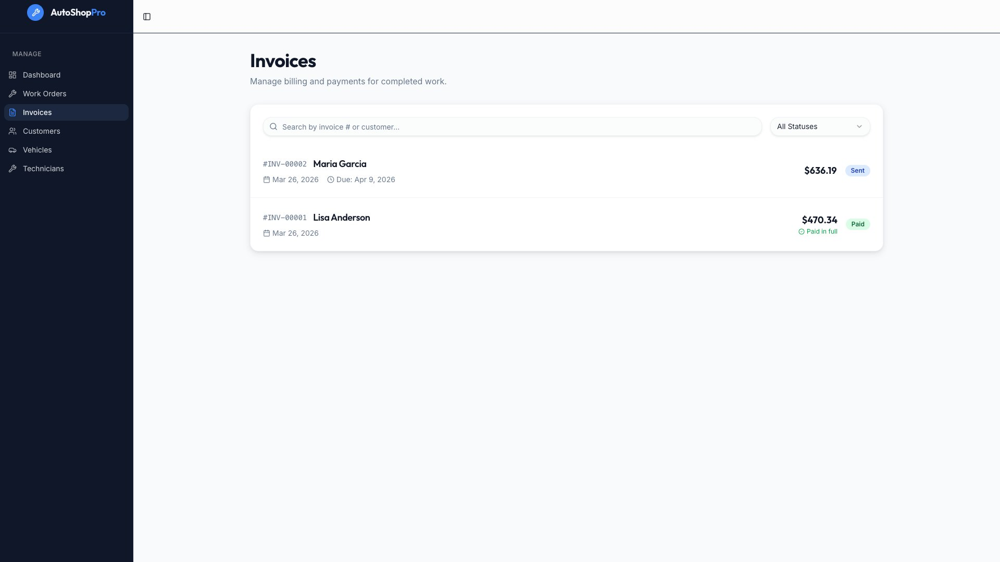
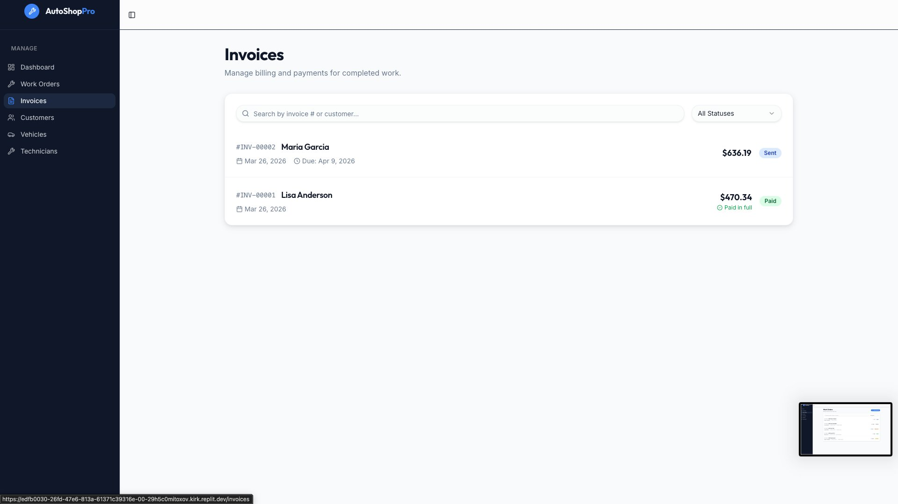
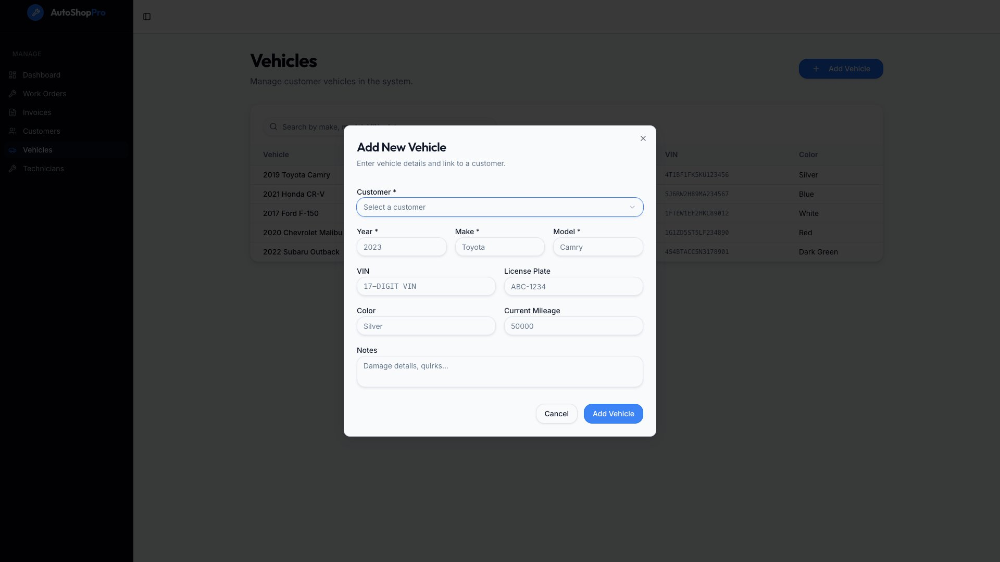

Context & my role
Independent vehicle repair shops are a fragmented, underserved market. Most are run by owner-operators juggling service bays, parts inventory, customer relationships, and invoicing — often across whiteboards, paper job cards, and disconnected spreadsheets. A purpose-built management platform for this segment didn’t exist in a form that felt native to how these businesses actually run.
I was brought in to lead the UX function for this product from day zero. My job covered the full design lifecycle: managing a distributed team of senior UX designers, UX writers, and UX researchers; establishing our design process and research infrastructure; and owning the design quality across every release from MVP through to year two.
The build played out in four phases — an MVP to validate core workflows, followed by a major release every six months that expanded the platform’s depth and breadth based on what we were learning from shops in production.
Foundational research
Immersive field research with shop owners and technicians. Established personas, journey maps, and the product’s core design principles.
Core workflow design & build
Designed work order management, customer records, and basic invoicing. Iterated through prototype testing with a pilot cohort of shops.
Inventory & parts management
Added parts tracking, supplier integrations, and reorder workflows. First major post-launch feature expansion based on user feedback.
What we were solving
The vehicle repair industry is dominated by small, independent shops — typically 2 to 10 employees. These businesses are run by people who are experts in engines and cars, not software. The tools they used before us ranged from pen-and-paper job cards to legacy desktop software built in the early 2000s that hadn’t been meaningfully updated since.
Shop owners weren’t looking for powerful software. They were looking for something that didn’t get in the way of fixing cars. Time is money in these shops.
The core tension we had to resolve was between operational completeness (shops needed to manage everything — jobs, parts, customers, payments) and cognitive simplicity (the person using it might have grease on their hands and three customers waiting). And providing them with just in time insights without getting in their way is key.
- Job cards written on paper, often lost or illegible
- Customer history stored in the owner’s memory
- Invoices created manually in Word or Excel
- Parts ordering done over the phone with no tracking
- No visibility into which bay was working on what
- End-of-month reconciliation took days
- Digital work orders created in under 30 seconds
- Full vehicle and customer history at a glance
- One-tap invoice generation from a completed job
- Parts linked directly to work orders and using AI to smartly map the right part for the job
- Real-time bay and technician status
- Automated scheduling which solves huge pain points for the shop owners
Getting inside the shop
Before a single wireframe was drawn, we spent the first three months entirely in research mode. I worked alongside our UX researchers to conduct foundational research with shop owners, service advisors, and technicians across different shop sizes and specialisations.
We weren’t just mapping workflows — we were trying to understand the mental models, the unwritten rules, the moments of friction that people had stopped noticing because they’d worked around them for so long.
The front desk is the most stressful place in the shop
Service advisors were managing customer expectations, tracking job progress, and handling phone calls simultaneously. Any tool they used needed to work in short, interruptible bursts — not long focused sessions.
Owners don’t think in “features” — they think in jobs to be done
When we asked about software needs, owners listed tasks: “I need to know what’s happening in my bays right now.” “I need to stop chasing people for payment.” Feature laundry lists from competitors meant nothing to them.
Trust is the real adoption barrier
Many owners had tried software before and given up. The biggest fear wasn’t learning something new — it was losing data or not being able to find things quickly during a busy day. Reliability and speed trumped richness of features.
Parts and labour are inseparable in the shop’s mental model
Every existing tool treated parts inventory and job management as separate modules. In reality, shops think about them as a single unit: a job isn’t complete until the parts are accounted for and the labour is priced. Our architecture had to reflect this.
“I tried three different systems. They all had too many screens. I’d rather write it on paper than click through five pages to log a brake job.”
— Shop owner, 12-bay independent workshop, foundational research sessionThese sessions directly shaped our design principles — particularly our commitment to keeping core task flows to three steps or fewer, and designing the product to be fully functional on a tablet mounted at the service desk.
How we designed it
Running a remote UX team across time zones required a deliberate process — one that gave designers enough autonomy to do deep work while keeping the team aligned and the research loop tight. I established a rhythm of weekly design critiques, biweekly research synthesis sessions, and monthly principal reviews that I ran directly with engineering and product leadership.
Concepts in Miro before wireframes in Figma
Every major feature started as a collaborative whiteboard in Miro — service blueprints, user flows, edge case mapping. This kept the team aligned on the problem before anyone started producing UI. It also made it easy to involve engineers and PMs in shaping the approach before designs were too far along to change.
Rapid interactive prototypes with V0 and Figma Make
We used V0 to generate quick functional UI scaffolding for concepts we wanted to test with real interactions — not just static screens. Figma Make let us turn high-fidelity designs into click-through prototypes with realistic data. This combination let us put something in front of shop owners within days of starting a new workflow, rather than weeks.
Deployed prototypes on Vercel for in-shop testing
For key workflow tests, we deployed working prototypes via Vercel so shop owners could use them on their own devices in their own environment — not in a sterile lab session. The difference in quality of feedback was dramatic. People found problems we’d never have caught in a moderated session.
UX writers embedded from day one
In repair shop software, the words matter as much as the layout. Technical jargon, confirmation messages, error states — everything had to feel like it was written by someone who understood the trade. Our UX writers were in Figma alongside designers from the first wireframe, not brought in at the end to “polish copy”.
Continuous research with a standing panel of shop owners
We built a panel of 30+ shops at different stages of adoption — prospects, new users, and power users — who we could reach within 48 hours for quick feedback. This made every release feel like an ongoing conversation rather than a one-way push.
Our toolchain reflected the principle that the right tool for each job accelerates the work — rather than a single tool doing everything poorly.
What we shipped
The platform launched with four core modules designed around the daily rhythm of a busy repair shop: work order management, customer and vehicle records, parts-linked job costing, and a live bay status view. Each module was designed to be fast to access and fast to complete — optimised for a service advisor who might have 90 seconds between customer interactions.







The most consequential design decision across the whole product was treating the work order as the central object — everything else (customer, vehicle, parts, invoice) attached to it rather than existing in separate silos. This matched how shop owners actually thought about their day: not in terms of customers or vehicles, but in terms of jobs to complete.
Results & impact
Adoption data and qualitative feedback consistently pointed to the same themes: the product felt like it was designed by someone who understood repair shops, not by a software company that had watched a few YouTube videos about the industry. That distinction — earned through months of real research — became our sharpest competitive differentiator.
“This is the first software I’ve used that actually feels like it was made for a shop. My guys picked it up in a day.”
— Shop owner, post-launch feedback sessionBeyond the product metrics, the way we worked — the standing research panel, the deployed prototypes, the embedded writers — became the operating model that the broader product team adopted for subsequent features. The UX process outlasted any individual feature we shipped.
What I’d do differently
Two and a half years on a product from zero gives you a clear view of where the leverage was — and where time was wasted. Three things stand out.
Start the design system earlier
We built a lot of one-off components in the MVP that we had to rationalise later. Starting with even a minimal token system — colour, spacing, typography — in month one would have saved significant rework by release two and made onboarding new designers to the team much faster.
Invest in async research documentation sooner
The insights from foundational research lived in Miro boards and Notion pages that were well-structured but hard to surface in a fast-moving sprint. We should have built a “living” insight repository from the start — something every designer could query before starting a new feature rather than rediscovering things we’d already learned.
Remote team rituals need more intentional design than in-person ones
Early on, our critique sessions were too freeform. When you can’t read the room, unstructured feedback sessions become dominated by the loudest voices. Moving to a structured critique format — written observations before verbal discussion, explicit separation of “what I notice” from “what I’d change” — dramatically improved the quality of feedback and made quieter team members more effective contributors.